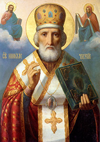
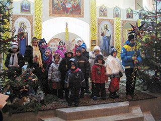
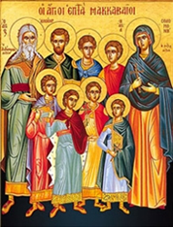

НОВОСТИ И ОБЪЯВЛЕНИЯ
Рождество Христово
07 января 2019
В ночь с 6-го на 7-е января состоялось торжественное богослужение в честь Рождества Христова, которое возглавил настоятель храма, протоиерей - отец Алексей (Савенко).
Он поздравил всех собравшихся со светлым праздником Рождества Христова, пожелал помощи Божией во всех добрых начинаниях, а также рассказал в своей проповеди историю праздника.
Во время царствования в Иудее Ирода, который был под властью Рима, римский император Август издал повеление сделать в подчиненной ему земле иудейской всенародную перепись. Каждый иудей должен был записаться там, где жили его предки. Иосиф и Дева Мария происходили из рода Давидова и потому отправились из Назарета в город Давидов Вифлеем. Придя в Вифлеем, они не могли найти себе места в доме, в гостинице, и остановились за городом, в пещере, куда пастухи загоняли скот в ненастную погоду.
В этой пещере ночью у Пресвятой Девы Марии родился Младенец – Сын Божий, Христос Спаситель мира. Она спеленала Божественного Младенца и положила Его в ясли, куда кладут корм для скота.
После рождения Иисуса первыми Ему пришли поклониться пастухи, извещённые об этом событии явлением ангела.
На небе появилась чудесная звезда, которая привела к младенцу Иисусу из далёких восточных стран мудрецов (волхвов). Они преподнесли дары — золото, ладан и смирну; не как младенцу, а как Царю. К тому времени Святое Семейство уже нашло приют «в доме».
Узнав о рождении Мессии и желая Его уничтожить, царь Иудеи Ирод приказал убить всех младенцев мужского пола в возрасте до двух лет. Однако Христос был чудесно спасён от смерти, потому что ангел повелел Иосифу бежать вместе с семьёй в Египет.
Святое семейство находилось в Египте до тех пор, пока царь Ирод не умер. Вернувшись, Иисус, Богоматерь и Иосиф поселились в Назарете. Оттуда и начался Крестный путь Спасителя. А от Рождества Христова началась новая эра человечества — наша эра.
Дорогие братья и сестры, поздравляем вас с самым светлым и радостным праздником в году! Счастья Вам, пусть Бог всех вас хранит!
Христос рождается! Славите Его!
Фотографии праздничного богослужения - в рубрике "Фотогалерея"
Праздник Святителя Николая Чудотворца
19 декабря 2018

В среду 19 декабря состоялась праздничная литургия дня памяти святителя Николая, архиепископа Мир Ликийского.
Святитель Николай родился в 270 году в городке Патары, который располагался в области Ликии в Малой Азии и был греческой колонией. Родители будущего архиепископа были весьма состоятельными людьми, но при этом верили во Христа и активно помогали бедным.
С детства святитель Николай полностью посвятил себя вере, много времени проводил в храме. Повзрослев, стал чтецом, а затем и священником в церкви, где настоятелем служил его дядя, епископ Николай Патарский. После смерти родителей святитель Николай раздал все свое наследство бедным и продолжил церковное служение.
В годы, когда отношение римских императоров к христианам стало более терпимым, но гонения тем не менее продолжались, он взошел на епископский престол в Мире. Сейчас этот городок называется Демре, он расположен в провинции Анталия в Турции.
Нового архиепископа очень полюбили люди: он был добрым, кротким, справедливым, отзывчивым — ни одна просьба к нему не оставалась без ответа. При всем этом святитель Николай запомнился современникам как непримиримый борец с язычеством — разрушал идолов и капища, и защитник христианства — обличал еретиков.
Своей горячей молитвой ко Христу святитель Николай спас город Миры от страшного голода. Молился и помогал он тонущим морякам на суднах, выводил из заточения в тюрьмах неправедно осужденных.
Святитель Николай дожил до глубокой старости и умер примерно в 345-351 годах (точная дата неизвестна). Еще при жизни он прославился многими чудесами, но еще больше чудес от святителя Николая стало происходить после его смерти. Причем его покровительство распространялось прежде всего на плавающих и путешествующих, на "всех сирых и убогих", на скотоводство и земледелие, считался он также и "хранителем земных вод".
Позднее, уже в православной традиции, святитель Николай получил еще два имени - Николай Чудотворец и Николай Угодник. Главное же состояло в том, что святитель Николай стал поистине народным святым. Ему посвящено огромное число литературных памятников, храмов, монастырей, икон. А сам образ святителя Николая Чудотворца, как милостивого, доброго, земного святого продолжает освящать сердца православных людей.
Празднование дня Андрея Первозванного
13 декабря 2018

В четверг 13 декабря состоялась праздничная литургия в честь святого апостола Андрея Первозванного.
Святой апостол Андрей родился в городе Вифсаиде в Галилее, впоследствии жил вместе со своим братом Симоном (Петром) в Капернауме, на берегу Геннисаретского озера, доставляя себе средства к существованию ловлей рыбы.
Святой апостол Андрей отличался молитвенной устремленностью к Богу и был учеником святого пророка Иоанна Крестителя. Когда Иоанн Креститель указал на Иордане святым апостолам Андрею и Иоанну Богослову на Иисуса Христа, называя Его Агнцем Божиим, они незамедлительно последовали за Господом.
Из Евангелия мы узнаём, что святой апостол Андрей был вместе с Господом Иисусом Христом во время чуда с пятью хлебами, насытившими пять тысяч человек, говорил с Господом в Вербное воскресенье, вопрошал Его вместе с апостолами Петром, Иаковом и Иоанном на Елеонской горе о будущем разрушении Иерусалима и о признаках Второго Пришествия Спасителя. Был он также свидетелем славного Воскресения и Вознесения Христова.
После Сошествия Святого Духа на апостолов, святой апостол Андрей отправился с проповедью Слова Божия в восточные страны и прошёл Малую Азию, Фракию, Македонию, Скифию, Причерноморье. Вверх по Днепру апостол Андрей поднялся до месторасположения будущего Киева, где водрузил крест на киевских горах. Продвигаясь далее на север, апостол Андрей дошел до поселений славян на месте будущего Новгорода и у нынешнего села Грузино водрузил свой жезл. Отсюда апостол Андрей через земли варягов прошел в Рим и вновь вернулся во Фракию. Здесь в небольшом селении Византии, будущем Константинополе, он основал христианскую Церковь.
На своем пути Первозванный апостол претерпел много печалей и мук от язычников: его изгоняли из городов, избивали. В Синопе его побили камнями, но, оставшись невредимым, верный ученик Христов неустанно нес людям проповедь о Спасителе. По молитвам апостола, Господь совершал чудеса. Трудами святого апостола Андрея возникали христианские Церкви, которым он ставил епископов и священство. Последним городом, куда пришел Первозванный апостол и где ему суждено было принять мученическую кончину, был город Патры.
Так как многие жители Патры уверовали во Христа, местный правитель Егеат возгорелся ненавистью против апостола Андрея и велел распять апостола так, чтобы он подольше страдал. Святого Андрея привязав ко кресту наподобие буквы X, не вбивая гвоздей в его руки и ноги, чтобы не вызвать скорой смерти. Несправедливый приговор Егеата вызвал в народе возмущение, тем не менее этот приговор остался в силе. Вися на кресте, апостол Андрей непрестанно молился. Перед разлучением его души с телом небесный свет осиял крест Андрея, и в его блистании апостол отошел в вечное Царство Божие. Мученическая кончина апостола Андрея Первозванного последовала около 62 года после Рождества Христова.
Русская Церковь, приняв веру из Византии, епископы которой ведут преемство от апостола Андрея, тоже считает себя его преемницей. Вот почему память святого Андрея Первозванного так торжественно почиталась в дореволюционной России.
Введение во храм Пресвятой Богородицы
04 декабря 2018

Днесь в храме Божии ясно Дева является и Христа всем предвозвещает...
Ангели вхождение Пречистыя зряще, удивишася: како Дева входит во Святая Святых.
Чистота и святость, свет и радость — вот неуловимое веяние праздника и службы. На ступенях ветхозаветной святыни Иерусалимского храма поставляется трехлетняя Юница, Святая Святых большая, торжествующая и радующаяся. А престарелые праведные родители Ее, Иоаким и Анна, и хор отроковиц с возжженными свечами, “поя, играя и ликуя”, сопровождают Ту, Которая приносится в дар Богу. Объятый священным восторгом, первосвященник Захария — старец, родитель Предтечев, “благословив, прият” Святую Отроковицу, и по особому откровению Божию ввел Ее во Святая Святых.
С вхождением в храм Пресвятой Богородицы свершилось чудо. Небо соединилось с землею, и вечность вошла во время, освящая его для вечности.
“Днесь благоволения Божия предображение, и человеков спасения проповедание...”
Так велик этот день, так единственен и неповторим он — день начала Нового Завета с Богом на земле.
Введение в храм Пресвятой Богородицы для нас является не совсем понятным. Но для древнего человека, особенно ветхозаветного, это было действительно огромное пророческое событие, событие, которое даже в каком-то плане меняло сознание или созерцание человека того времени. Почему? Происходит два удивительных момента. С одной стороны, маленькая девочка сама поднимается по ступеням храма, с другой стороны, первосвященник вводит ее во Святая Святых – в то место, в которое первосвященник сам входил один раз в год.
Само событие Введения в храм Младенеца–Девы показывает, что она посвящена Богу, Она есть предизбранный сосуд, который станет носителем Сына Божия. А Святая Святых – образ Рая, это конечный результат жизни, к которому должен стремиться человек. И входя туда, Богородица как бы ведет за собой всех людей, Она показывает, что через Нее все человечество спасется и попадет в Рай – возвратится в ту священную древнюю область, которую утратило через первородный грех прародителей.
Покров Пресвятой Богородицы
14 октября 2018
В воскресенье 14 октября состоялось праздничная литургия в честь Покрова Пресвятой Владычицы нашей Богородицы и Приснодевы Марии. История этого праздника такова:

В 911 году в Византийскую империю вторглись язычники и осадили столицу Константинополь. Жители великого города, не имея достаточно сил противостоять неприятелю, прибегли к последнему средству — помощи Заступницы Небесной.
В воскресный день во время всенощного бдения Влахернский храм, в котором хранилась большая христианская реликвия – риза Богородицы, был переполнен верующими, молящимися о спасении. Был среди них и Андрей, Христа ради юродивый. Уже на исходе ночи он и его ученик Епифаний неожиданно увидели идущую по воздуху озаренную небесным светом величественную Жену в сопровождении Иоанна Крестителя, апостола Иоанна Богослова и ангелов.
Преклонив колени, Царица Небесная начала со слезами молиться. Матерь Божия просила Своего Сына принять молитвы всех людей, призывающих Его пресвятое имя и прибегающих к Ее заступлению. Затем Богородица сняла с головы покрывало и распростерла его над молившимися в храме людьми, как бы защищая их таким образом от врагов видимых и невидимых. Покров этот блистал «паче лучей солнечных». Святые Андрей и Епифаний с душевным трепетом созерцали это дивное видение… Также неожиданно Пресвятая Богородица исчезла. Стал невидимым и Ее омофор. Но еще долго молящиеся ощущали благодать, вдруг осенившую храм. Их упование на Заступницу Небесную было не напрасным — вскоре осаждавшие были отогнаны от «города Константина».
Установленный в честь чудесного явления Пресвятой Богородицы во Влахернском храме этот праздник Греческой Церковью был вскоре забыт, зато на Руси стал одним из наиболее почитаемых.
Праздник Покрова Пресвятой Богородицы всегда был днем запорожских казаков. Наши предки верили, что Дева Мария охраняет мужественных воинов, оберегает их от вражеских пуль и сабель, а также дарует мудрость в принятии сложных решений. Не случайно именно на Покров казаки выбирали своих командиров.
Преставление Святого Иоанна Богослова
09 октября 2018
Святая Церковь празднует память апостола и евангелиста Иоанна Богослова три раза в году, и память о нем всегда неизменно согревает души наши. Святой апостол и евангелист Иоанн Богослов — первое звено в неразрывной цепи благодатного преемства от Самого Господа Иисуса Христа в I веке христианства.
Апостол Иоанн чистотой девственной души своей так возлюбил Господа, что никакие земные привязанности не отяготили его в жизни. Он отдал Богу сердце свое, полное ароматов чистой и святой любви только к Нему. Совсем юным он оставил дом отца своего, рыбаря Зеведея, и откликнулся на проповедь Предтечи Христова, призывающего людей Божиих приготовить путь Господу.
Последовал Иоанн за Христом, все оставив ради Него: и дом родной, и отца, и мать, и тихую, спокойную жизнь рыбаря, — он пошел по бурному житейскому морю неведомым доселе путем в неведомую обетованную землю — в Царство Небесное. Так в I веке в присутствии Христа загорелось сердце Иоанна.
Святой апостол и евангелист Иоанн Богослов многими болезнями и трудами потрудился «во благовестии Христове». Любовь к своему Божественному Учителю оказалась сильнее страха перед врагами. Он так возлюбил Господа, что прошел крестным путем, взошел на крест и распял себя и жизнь свою. Он жил не для себя, но для Умершего за него и Воскресшего.
У Креста Спасителя состраждущим Ему был Иоанн. Только его беспредельно любящему сердцу вручил Спаситель Мать Свою, усыновив его Ей. Любимому ученику — любимую Мать вручает Господь на заботу о Ней и попечение до конца Ее дней.
Жизнь апостола Иоанна истощается. Уже написана изгнанником, созерцающим грозные видения на пустынных скалах Патмоса, последняя пророческая книга о будущих судьбах Церкви и мира. Ослабевший столетний старец, труженик Христов, говорит последнюю проповедь: «Дети, любите друг друга! Это заповедь Господня, если соблюдете ее, то и довольно». Вот все учение, которое преподает от полноты любви догорающий светильник Христов возлюбленный.
Послушные приказанию учителя Иоанновы ученики живым засыпали его земным прахом. Проходит мало дней, и Иоанновы ученики, открыв могилу, не обнаружили тела Иоанна. Могила опустела.
Торжество любви и девства: дыхание смерти не угасило пламеневшего любовью.
Память святых мучениц Веры, Надежды, Любови
и матери их Софии
30 сентября 2018
Эти святые мученицы жили в Италии в правление императора Адриана (117–138). Они происходили из богатой и благочестивой семьи. Мать трех дочерей София, имя которой означает «премудрость», воспитала чад в вере, надежде и любви к ближним.
Однажды, во время пребывания святых в Риме, они были задержаны солдатами императора, до которого дошла молва об их благочестии и добродетелях. Император был поражен твердостью веры столь юных дев и приказал приводить их к себе по отдельности, думая, что так они не будут подражать друг другу и не дерзнут дать ему отпор.
Первой предстала перед тираном двенадцатилетняя Вера. Она уверенно отвечала на льстивые речи Адриана, осудив его нечестие и злые замыслы против христиан. Разгневанный император приказал раздеть девушку и нещадно бичевать. Затем ей отрезали сосцы, и из ран вместо крови потекло молоко. Другие мучения, которым подвергли Веру, также не сломили ее, огражденную силой Божией. Святая София все это время поощряла дочь радостно принять смерть, соединяющую со Христом. После истязаний святая Вера была обезглавлена.
Затем император приказал позвать Надежду, которой было десять лет. Она была столь же тверда в исповедании Христа истинным Богом, как и ее сестра. Ее бичевали, затем бросили в горящую печь, но пламя погасло, ибо любовь к Богу, горевшая в душе Надежды, была сильнее всякого чувственного пламени. После многих других мучений она также приняла смерть от меча, воссылая хвалы Господу.
Адриан, сильно разгневавшись, призвал Любовь, которой было всего девять лет. Но и это дитя обнаружило такое же мужество, как сестры. Ее подвесили на дыбе и растянули так сильно, что начали ломаться суставы ног и рук. Затем девочку бросили в пылающую печь, но от огня ее спас ангел. В конце концов святая Любовь была усечена мечом.
Их мать радовалась духом, видя столь славные подвиги дочерей, достигших небесных обителей, но ее человеческое сердце было столь измождено страданием, что через несколько дней святая София отошла ко Господу на могиле своих чад.
Апостол Павел говорит: «Противостаньте диаволу, и он убежит от вас. Стойте в вере, мужайтесь, будьте непоколебимы, укрепите расслабленные колена... Смиритесь под крепкую руку Божию, — и Господь вознесёт вас в своё время... Мало имеешь силы, но держи то, что имеешь, дабы никто не восхитил венца твоего... Будь верен даже до смерти — и дам тебе венец жизни».
Достоинство христианина познаётся в испытаниях, в умении преодолевать искушения. Скорби, гонения и лишения есть соль жизни христианина.
Жизнь постоянно доказывает, что часто то, что мы воспринимаем как трагедию или несчастье, смиряющее нас даже и без нашего желания, в итоге приводит к большому благу. Скорбями посещает нас Сам Господь, поэтому мы должны радоваться Его вниманию к нам, подражая в этом святым мученикам, а не роптать и отчаиваться, прогоняя Его этим от себя.
30 сентября, в день памяти святых мучениц Веры, Надежды, Любови и матери их Софии, храм отметил свой престольный праздник.
В этот день радость праздника разделили не только прихожане, но и гости нашего храма.
Рождество Иоанна Крестителя
07 июля 2018
В субботу 07 июля на праздник Рождества Иоанна Крестителя была отслужена божественная литургия.
Рождество Иоанна Предтечи — это один из великих праздников. В этот день верующие вспоминают, как в семье иудейского священника Захарии и его жены Елизаветы родился будущий пророк, который предскажет пришествие Мессии — Иисуса Христа, а потом крестит его в водах реки Иордан.
Как повествует Евангелие (Лк. 1, 57–80), праведные родители святого Иоанна Крестителя - священник Захария и Елисавета, жившие в древнем городе Хевроне, достигли старости, но не имели детей, так как Елисавета была неплодна.
Однажды святой Захария совершал богослужение в Иерусалимском храме и увидел Архангела Гавриила, стоящего по правую сторону жертвенника кадильного. Он предсказал, что у Захарии родится сын, который будет провозвестником ожидаемого Ветхозаветной Церковью Спасителя – Мессии. Захария смутился, на него напал страх. Он усомнился, что в старости возможно иметь сына, и просил знамения. Оно было дано ему, являясь одновременно и наказанием за неверие: Захария был поражен немотой до времени исполнения слов Архангела.
Святая Елисавета зачала и, боясь насмешек над поздней беременностью, таилась пять месяцев, пока ее не посетила приходившаяся ей дальней родственницей Преблагословенная Дева Мария, чтобы разделить Свою и ее радость. Елисавета, исполнившись Святого Духа, первая приветствовала Деву Марию как Матерь Божию. Вместе с ней Пресвятую Деву Марию и воплотившегося в Ней Сына Божия приветствовал "играньми, яко песньми" и святой Иоанн, еще находившийся в утробе матери своей, праведной Елисаветы.
Настало время, и святая Елисавета родила сына, все родственники и друзья радовались вместе с ней. На восьмой день по закону Моисееву совершилось его обрезание. Мать назвала его Иоанном. Все были удивлены, так как никто в их роде не носил этого имени. Когда спросили об этом святого Захарию, он попросил дощечку и написал на ней: "Иоанн имя ему" – и тотчас связывавшие по предсказанию Архангела его речь узы разрешились, и святой Захария, исполнившись Духа Святого, прославил Бога и произнес пророческие слова о Явившемся в мир Мессии и о своем сыне Иоанне – Предтече Господа.
После Рождества Господа нашего Иисуса Христа и поклонения пастырей и волхвов нечестивый царь Ирод повелел избить всех младенцев. Услышав об этом, святая Елисавета убежала со своим сыном в пустыню и скрывалась в пещере. Святой Захария как священник находился в Иерусалиме и исполнял свое священническое служение в храме. Ирод послал к нему воинов с приказанием открыть местопребывание младенца Иоанна и его матери. Захария ответил, что это ему неизвестно, и был убит прямо в храме. Праведная Елисавета с сыном продолжала жить в пустыне и там умерла. Отрок Иоанн, охраняемый Ангелом, находился в пустыне до того времени, как вышел на проповедь о покаянии и сам сподобился крестить пришедшего в мир Господа.
Праздник Святой Троицы
27 мая 2018

День, который мы празднуем, и его смысл трудно объяснить. Дело даже не в словах. Когда мы говорим, что наш Бог – Троица, то и чувства приходят в смятение. Как это понимать? Или даже важнее – как к этому относиться?
Ведь важнее всего для человека не то, каков мир и почему он устроен именно так, но что я делаю в этом мире, зачем пришел сюда и как я своей жизнью могу ответить на тайну мироздания…
Здесь мы начинаем приближаться к постижению смысла нашей веры в Бога Троицу. Мы смотрим вокруг, замечаем удивительную гармонию и мудрость в природе, людях, обществе; мы вглядываемся в себя, в свои чувства, переживания и понимаем, что все это слишком таинственно, премудро и прекрасно, чтобы быть порождением слепого случая. Эта тайна могла произойти лишь от другой Тайны…
Святая Троица – это полнота. Тайна Троицы – это любовь. И здесь открывается причина и смысл того мира, загадочности которого мы каждый день удивляемся. Бог творит мир и людей, потому что Он действительно желает и может объять их Своей любовью. Он Себя приносит в жертву за отвернувшееся от Него создание. И только в Троице можно постичь величие этого события.
На тайну Святой Троицы мы призваны ответить тайной любви, вложенной Богом в каждого человека. И это очень важно – всегда напоминать себе об этом. Напоминать о том, что Богу не нужны наши добрые дела, духовные упражнения, молитвы, если они в нас самих не открывают следы Божественной тайны. Напоминать о том, что эту тайну мы должны уважать в каждом, кто встречается на нашем пути.
Троицкая вселенская Родительская суббота
26 мая 2018
Родительская суббота – это поминовение всех усопших православных христиан. Всякая суббота посвящена в церковном календаре поминовению усопших, но есть и особо выделенные субботние дни. Родительскими они именуются потому, что родители — самые близкие нам люди, однако молятся в эти дни не только за родственников.
В эти дни совершаются заупокойные богослужения — парастасы, панихиды, заупокойные литии. Богослужения начинаются накануне вечером (т.е. в пятницу), т.к. богослужебный день начинается с вечера.
Выделяются две Вселенские поминальные субботы: Мясопустная и Троицкая. Основной смысл этих «вселенских» (общих для всей Православной Церкви) заупокойных богослужений – в молитве за всех почивших православных христианах, независимо от их личной близости нам.
Для нас – живых – этот день памяти наших близких и любимых следует, по возможности, провести в молитве. Мертвым уже некогда каяться и просить прощения, зато мы можем приложить все силы и просить Бога о милости к ним.
В родительские субботы православному христианину, по возможности, нужно посетить заупокойную литургию и панихиду, молиться во время богослужения не только за наших близких, но и за все умерших православных христианах, после этого посетить кладбище и там совершить уже частную молитву. Это самое главное. А насчет трапезы – церковными правилами эта сторона жизни никак не регламентируется. Правило одно – умеренность. Во всем. Главное в этот день – молитва.
Апостол и Евангелист Иоанн Богослов
21 мая 2018
Святой апостол и Евангелист Иоанн Богослов занимает особое место в ряду избранных учеников Христа Спасителя. Апостол Иоанн изображается кротким, величественным и духоносным старцем, с чертами девственной нежности, с печатью полного спокойствия на челе и глубоким взором созерцателя неизреченных откровений. Другая главная особенность духовного облика апостола открывается через его учение о любви, за которое ему по преимуществу усвоено наименование Апостола любви. Служение Любви – весь жизненный путь апостола Иоанна Богослова.
Он обладал в высшей степени пылкой натурой. Отличительными чертами его характера были наблюдательность и восприимчивость к событиям, проникнутые тонким чувством послушания воле Божией. Избрав путь служения Христу, он до конца жизни совершал его с полнотой и безраздельной последовательностью.
Апостолу Иоанну было определено выразить последнее слово Божественного Откровения, вводящего в сокровеннейшие тайны внутренней Божественной жизни, ведомые только вечному Слову Божию, Единородному Сыну. Богословие апостола Иоанна уничтожает границу между настоящим и будущим.
Так галилейский рыбак, сын Зеведея, стал Богословом, возвестившим через Откровение тайну миробытия и судьбы человечества.
Празднование 21 мая/8 мая святому апостолу Иоанну Богослову установлено Церковью в воспоминание ежегодного исхождения в этот день на месте его погребения тончайшего розового праха, который собирали верующие для исцелений от различных болезней.
21 мая 2018 года, в день памяти Святого апостола и Евангелиста Иоанна Богослова, храм отметил свой престольный праздник. Праздничную Божественную литургию возглавил ректор Киевской духовной академии и семинарии епископ Белогородский Сильвестр. Его Преосвященству сослужили: благочинный первого Дарницкого благочиния г.Киева протоиерей Василий Беляк; настоятель храма протоиерей Алексей Савенко; благочинный Вишневского благочиния Киевской епархии протоиерей Василий Русинка, а также столичное духовенство.
В этот день радость праздника разделили не только прихожане, но и гости нашего храма. За богослужением несколько прихожан нашего храма получили заслуженные награды.
Вознесение Господне
17 мая 2018
 |
В четверг 17 мая состоялось праздничная литургия в честь праздника Вознесения Господа Бога и Спасителя нашего Иисуса Христа.
Вознесение знаменует собой последний путь Христа на небо, к Отцу его для воссоединения и триединого правления — Святого Духа, Бога-Сына и Бога-Отца.
После воскрешения Иисус еще 40 дней общался в образе человека со своими учениками, давая им наставления и благословляя на будущие апостольские свершения. В день Вознесения Господь собрал апостолов в Вифании, на горе Елеон. Христос благословил их и - как был, во плоти - вознесся на небо. Новый Завет так пишет об этом событии:
"Он поднялся в глазах их, и облако взяло Его из вида их. И когда они смотрели на небо, во время восхождения Его, вдруг предстали им два мужа в белой одежде и сказали: мужи Галилейские! что вы стоите и смотрите на небо? Сей Иисус, вознесшийся от вас на небо, придет таким же образом, как вы видели Его восходящим на небо." (Деян 1:9-11)
Иисус Христос оставил своим ученикам важное послание о том, что он вернется на Землю. Это будет его второе пришествие, которое описано еще и в книге Апокалипсиса. Согласно этому посланию, Христос придет, чтобы всех людей судить справедливым судом за совершенные грехи.
День жён-мироносиц
22 апреля 2018
22 апреля 2018 года в храме святой благоверной царицы Тамары была отслужена праздничная литургия. Настоятель протоиерей Алексей поздравил всех женщин с праздником жён-мироносиц. Каждой прихожанке храма был подарен букет цветов.
История жен-мироносиц связана с именами Марии Магдалины, Саломии (дочери Иосифа Обручника), Марии и Марфы (сестры Лазаря), Иоанны (жена Хузы), Марии Клеоповой (жены брата Обручника), которые первыми пришли к пещере, где покоился Иисус. Они пришли туда, чтобы по обычаю омыть тело и подготовить его к погребению согласно традициям того времени. С собой у них были специальные благовония. Именно за них они и стали называться мироносицами.
Очень показательно, что приверженцы Христа отреклись от него, испугались гонений и преследований существующих властей, а именно женщины не побоялись и проявили смелость, придя почтить того, кому верили. Именно жен мироносиц у пещеры встретил ангел, провозгласивший, что Иисуса нет там, а он воскрес.
Святые жены-мироносицы своим примером говорят нам о том, какой должна быть любовь ко Господу. Истинная любовь – не кратковременный порыв нашего сердца. Она постоянна, крепка, неизменна и в радости, в благополучии, в счастье, и одинаковым огнем горит в сердце каждого истинного христианина в минуты скорби, в дни испытаний, в годины болезней.
Каждая женщина Земли является мироносицей по жизни — несет мир миру, своей семье, домашнему очагу, она рождает детей, является опорой мужу. Православие возвеличивает женщину-мать, женщину всех сословий и народностей.
Неделя (воскресенье) жен-мироносиц — это праздник каждой православной христианки, православный женский день.
Праздник Святой Троицы
04 июня 2017
В воскресенье 04 июня на праздник Святой Троицы была отслужена божественная литургия.
В церковной богослужебной традиции этот праздник чаще всего именуется Пятидесятницей или днем Сошествия Святого Духа, так как в этот день Третья Ипостась Живоначальной Троицы – Дух Святый – в виде огненных языков сошел на собравшихся в Сионской горнице апостолов.
Главнейшая суть этого праздника состоит в том, что Пятидесятница – это день основания Церкви. События Пятидесятницы являются завершением, последним звеном в цепи домостроительства спасения человека.
Почему именно Пятидесятница?
Потому что в Воскресении Господь преображает только одну человеческую природу – ту, которую воспринял Сам в Боговоплощении. В день же Сошествия Святого Духа на апостолов возможность преображения и духовного возрождения преподается Духом Святым всем членам Церкви. Таким образом, в Церкви Христовой Святой Дух реализует и усвояет нам то, что было совершено Господом Иисусом Христом, а именно – спасение человека. Единственное условие, которое требуется от человека, – никогда не отделяться от тела Церкви.
Коленопреклоненные молитвы, читаемые священнослужителями на вечерне в день Пятидесятницы, прежде всего, содержат в себе особые прошения о ниспослании верующим во Христа Святого Духа, Который есть Дух премудрости, разума и страха Божия (см.: Ис. 11:2). Читаются же они на коленях по той причине, что человек, осознавая низость своего греховного падения, свою духовную беспомощность и слабость, подобно мытарю из Евангельской притчи, не смеет поднять свой взор вверх, к Небу, но в смирении коленопреклоненно обращается к Богу, дабы Он помиловал Его и ниспослал Свою спасительную освящающую благодать. Особенные же коленопреклоненные молитвы мы совершаем именно в день Пятидесятницы потому, что Кто, как не Дух Святой, знает глубины человеческих сердец? Только Он может направить нас на единственно возможный путь спасения. От нас же требуется одно: не помешать Ему в этом деле.
Фотографии Праздничного Богослужения - в рубрике "Фотогалерея"
Вознесение Господне
25 мая 2017
|
В четверг 25 мая состоялось праздничная литургия в честь праздника Вознесения Господа Бога и Спасителя нашего Иисуса Христа.
Вознесение знаменует собой последний путь Христа на небо, к Отцу его для воссоединения и триединого правления — Святого Духа, Бога-Сына и Бога-Отца.
После воскрешения Иисус еще 40 дней общался в образе человека со своими учениками, давая им наставления и благословляя на будущие апостольские свершения. В день Вознесения Господь собрал апостолов в Вифании, на горе Елеон. Христос благословил их и - как был, во плоти - вознесся на небо. Новый Завет так пишет об этом событии:
"Он поднялся в глазах их, и облако взяло Его из вида их. И когда они смотрели на небо, во время восхождения Его, вдруг предстали им два мужа в белой одежде и сказали: мужи Галилейские! что вы стоите и смотрите на небо? Сей Иисус, вознесшийся от вас на небо, придет таким же образом, как вы видели Его восходящим на небо." (Деян 1:9-11)
Иисус Христос оставил своим ученикам важное послание о том, что он вернется на Землю. Это будет его второе пришествие, которое описано еще и в книге Апокалипсиса. Согласно этому посланию, Христос придет, чтобы всех людей судить справедливым судом за совершенные грехи.
Праздник Святителя Николая Чудотворца
22 мая 2017

В понедельник 22 мая состоялось праздничная литургия дня памяти святителя Николая, архиепископа Мир Ликийского.
Святитель Николай, живший в III-IV веках, прославился как великий угодник Божий, поэтому в народе его обычно называют Николаем Угодником. Святитель Николай считался «всех предстателем и заступником, всех скорбных утешителем, всех сущих в бедах прибежищем, благочестия столпом, верных поборником». Христиане верят, что и сегодня он совершает множество чудес в помощь молящимся ему людям.
Святителю Николаю в православном церковном календаре посвящен не один праздник. 19 декабря по новому стилю вспоминается день смерти святого, 11 августа — его рождение. В народе эти два праздника называли Никола Зимний и Никола Осенний.
22 мая верующие вспоминают перенесение мощей святителя и чудотворца Николая из Мир Ликийских в Бари, которое произошло в 1087 году. На Руси этот день имееновали Никола Вешний (то есть весенний), или Никола Летний.
Более четверти века святитель Николай Мирликийский вел свою паству и отошел к Богу 6 декабря 335 г. Через семьсот с лишним лет город Миры и вся Ликийская страна были разрушены сарацинами. Развалины храма с гробницей святителя были в запустении и охранялись лишь несколькими благочестивыми монахами.
По преданию, в 1087 году святитель Николай явился во сне одному священнику города Бари (в южной Италии) и повелел перенести его мощи в этот город.
Гробница святителя оказалась наполненной до краев благоуханным миром, в котором были погружены мощи. Их переложили в ковчег и отправились в путь.
В Бари великой святыне была устроена торжественная встреча, а от мощей произошло множество чудес.
Архиерейское Богослужение
21 мая 2017

В воскресенье 21 мая 2017, в день памяти святого апостола и евангелиста Иоанна Богослова состоялась архиерейское Богослужение.
Праздничную литургию возглавил Преосвященнейший Климент, епископ Ирпенский, викарий Киевской Епархии.
По окончании литургии Его Преосвященство поздравил всех присутсвующих с храмовым праздником.
Преполовение Пятидесятницы
10 мая 2017
Преполовение Святой Пятидесятницы — один их древнейших христианских праздников. Слово «преполовение» означает половину, половину пути от Пасхи до Праздника Пятидесятницы (Троицы). От Пасхи до Троицы — 50 дней, поэтому и период этот назван Пятидесятницей, соответственно, половина приходится на 25-й послепасхальный день, то есть на среду 4-й недели после Пасхи.
Преполовение стоит между днем Пасхи и Троицы (Пятидесятницы) и как бы связывает эти великие праздники: мы продолжаем праздновать Пасху и готовимся к приближению Троицы.
На литургии в этот день читается отрывок из Евангелия от Иоанна (7:14-30), в котором говорится о том, как в середине иудейского праздника Кущей Иисус Христос пришел в Иерусалимский храм и учил. Люди удивлялись, потому что знали, что Он не получал специального образования. Спаситель произнес следующие слова: «Мое учение — не Мое, но Пославшего Меня; кто хочет творить волю Его, тот узнает о сем учении, от Бога ли оно, или Я Сам от Себя говорю. Говорящий сам от себя ищет славы себе; а Кто ищет славы Пославшему Его, Тот истинен, и нет неправды в Нем» (Ин 7:16-18).
«Сказав, что Мое учение не Мое, то есть не противное Богу, но учение Отца Моего, — пишет святитель Иоанн Златоуст, — говорит, что кто будет творить волю Божию, то есть кто освоится с добродетелью, а не будет рабом зависти и не омрачится напрасною ненавистью против Меня, тот узнает силу слов Моих, от Отца ли Я говорю, или нечто чуждое и противное Ему. — Волю же Божию творит тот, кто углубляется в Писания и пророков. Такой человек может узнать об учении Господнем, что оно от Бога. Ибо пророки изображают Господа не противником Богу и говорящим от Самого Себя, но говорящим и делающим все такое, что угодно Богу».
День Преполовения Пятидесятницы — повод не только начать готовиться к Празднику Троицы, но и вспомнить, как можно творить Божию Волю.День Преполовения Пятидесятницы — повод не только начать готовиться к Празднику Троицы, но и вспомнить, как можно творить Божию Волю.
День святого Георгия Победоносца
06 мая 2017
06 мая весь православный мир чтит память Святого Георгия Победоносца.
Великомученик Георгий был сыном богатых и благочестивых родителей, воспитавших его в христианской вере. Родился Георгий в городе Бейруте (в древности — Белит), у подножия Ливанских гор.
Поступив на военную службу, великомученик Георгий выделялся среди прочих воинов своим умом, храбростью, физической силой, воинской осанкой и красотой. Достигнув вскоре звания тысяченачальника, св. Георгий сделался любимцем императора Диоклетиана. Диоклетиан был талантливым правителем, но фанатичным приверженцем римских богов. Поставив себе целью возродить в Римской империи отмирающее язычество, он вошел в историю, как один из самых жестоких гонителей христиан.
Услышав однажды на суде бесчеловечный приговор об истреблении христиан, св. Георгий воспламенился состраданием к ним. Предвидя, что его тоже ожидают страдания, Георгий раздал свое имущество бедным, отпустил на волю своих рабов, явился к Диоклетиану и, объявив себя христианином, обличил его в жестокости и несправедливости. Речь св. Георгия была полна сильных и убедительных возражений против императорского приказа преследовать христиан.
После безрезультатных уговоров отречься от Христа император приказал подвергнуть святого различным мучениям. Св. Георгий был заключен в темницу, где его положили спиной на землю, ноги заключили в колодки, а на грудь положили тяжелый камень. Но Св. Георгий мужественно переносил страдания и прославлял Господа. Тогда мучители Георгия начали изощряться в жестокости. Они били святого воловьими жилами, колесовали, бросали в негашеную известь, принуждали бежать в сапогах с острыми гвоздями внутри. Святой мученик все терпеливо переносил. В конце концов император приказал отрубить мечом голову святому. Так святой страдалец отошел ко Христу в Никомидии в 303 году.
Великомученика Георгия за мужество и за духовную победу над мучителями, которые не смогли заставить его отказаться от христианства, а также за чудодейственную помощь людям в опасности — называют еще Победоносцем. Мощи святого Георгия Победоносца положили в палестинском городе Лида, в храме, носящем его имя, глава же его хранилась в Риме в храме, тоже посвященном ему.
На иконах св. Георгий изображается сидящим на белом коне и поражающим копьем змия. Это изображение основано на предании и относится к посмертным чудесам святого великомученика Георгия. Рассказывают, что недалеко от места, где родился св. Георгий в городе Бейруте, в озере жил змей, который часто пожирал людей той местности. Что это был за зверь — удав, крокодил или большая ящерица — неизвестно.
Суеверные люди той местности для утоления ярости змея начали регулярно по жребию отдавать ему на съедение юношу или девицу. Однажды жребий выпал на дочь правителя той местности. Ее отвели к берегу озера и привязали, где она в ужасе стала ожидать появления змея.
Когда же зверь стал приближаться к ней, вдруг появился на белом коне светлый юноша, который копьем поразил змея и спас девицу. Этот юноша был святой великомученик Георгий. Таким чудесным явлением он прекратил уничтожение юношей и девушек в пределах Бейрута и обратил ко Христу жителей той страны, которые до этого были язычниками.
В народной традиции, святой Георгий считается покровителем воинов, земледельцев и скотоводов.
Изображение Георгия Победоносца на коне символизирует победу над диаволом — «древним змием».
День жён-мироносиц
30 апреля 2017
30 апреля 2017 года в храме святой благоверной царицы Тамары была отслужена праздничная литургия. Настоятель протоиерей Алексей поздравил всех женщин с праздником жён-мироносиц. Каждой прихожанке храма был подарен букет цветов.
Этот праздник посвящен обычным женщинам — Христовым ученицам, неотступно следовавшим за своим Учителем и не оставившим Его даже в те минуты, когда большинство апостолов попросту разбежались. И событие, воспоминаемое в этот день, тоже, на первый взгляд, самое обыденное — не успев совершить погребальный обряд над умершим Спасителем из-за приближавшейся субботы, женщины на третьи сутки после Его крестной смерти поспешили к гробу. С собою они несли миро — дорогое пахучее масло — и шли к могиле помазать тело Иисуса.
Верили ли они в то, что снова увидят Господа живым? Вряд ли. Как и для остальных учеников, арест, распятие и смерть Иисуса были для них своеобразным финалом — с казнью Христа эти хрупкие женщины утратили значительный смысл дальнейшего существования. Конечно, они продолжали жить ради своих семей, но жить так, как раньше, полноценно, каждый день общаясь с Учителем, уже было невозможно. И все же любовь — безусловная и безграничная — подняла мироносиц среди ночи и заставила бежать к месту погребения Христа. Сердце словно говорило им: «Спешите, и вы увидите то, что радикально изменит вашу жизнь, сделает ее более осмысленной и глубокой, чем ранее — в минуты наибольшей радости».
Огромная чистая вера святых женщин была вознаграждена. Когда они приблизились к могиле, только лишь тут вспомнив, что вход в погребальную камеру завален тяжелым камнем, то увидели, что пещера открыта. Едва преодолевая охватившее их оцепенение, они заглянули вовнутрь и встретили ангела, который говорил им, что Тот, Кого ищут мироносицы, воскрес и ждет их в Галилее. Скорее всего, другой на месте этих женщин смутился бы, решив, что все виденное им — галлюцинации и плод воспаленного воображения. Но ученицы Христовы поверили сразу и безо всякого сомнения — получив благую весть, они бросились обратно в город, к апостолам, которые сидели в доме и там переживали обрушившееся на них горе. Еще больше вера женщин укрепилась, когда на обратной дороге они увидели самого воскресшего Господа.
У гроба осталась лишь Мария Магдалина, которая либо пришла не со всеми, либо просто решила побыть наедине, чтобы лучше понять случившееся. Она еще не до конца осознала величие этого момента, и когда перед ней появился человек, подумала, что перед нею садовник, и стала спрашивать у него, куда исчезло тело Учителя. Но садовник назвал ее по имени, причем сделал это так, как делал только один Человек на земле. Перед нею стоял Сам Христос — живой, воскресший, реальный! Радости женщины не было предела — она своими глазами видела Того, Кого еще пару дней назад безутешно оплакивала вместе с другими ученицами.
Потом Господь явился остальным — апостолам, ученикам, другим Своим спутницам, которые все три года Его проповеди были с Ним. Но первым радостную новость о Воскресении Спасителя узнали именно они, мироносицы — женщины, которые не побоялись ни преследования старейшин, ни возможной грубости римской охраны, которая до момента явления ангела стерегла гроб Спасителя, ни других опасностей, подстерегающих человека ночью. Ученицами двигала любовь — та самая любовь, которой их учил Господь, и которая не ведает никаких преград — даже смерти.
Из Евангелия известны имена лишь нескольких жен-мироносиц: Мария Магдалина (исцеленная Иисусом Христом от страшного недуга); Мария Клеопова (жена Клеопа, брата Иосифа Обручника); Мария Иаковлева (мать Иакова, апостола от 70-ти); Саломия (жена рыбака Зеведея и мать апостолов Иакова и Иоанна Богослова); Иоанна (жена Хузы, домоправителя царя Ирода Антипы, сохранившая главу Иоанна Крестителя); Марфа и Мария (сестры Лазаря, близкого друга Иисуса Христа, которого Он воскресил из мертвых незадолго до Своего церемониального Входа в Иерусалим); а также Сусанна (о ней ничего не известно). Евангелисты упоминают и о «многих других» женщинах из Галилеи, служивших Иисусу и вместе с Ним пришедших в Иерусалим на Его последнюю Пасху. Этих женщин за их подвиг любви Церковь почитает святыми.
Традиционно Пресвятая Дева не входит в число жен-мироносиц, но она все равно считается первой, кто получил весть о Воскресении Сына — согласно преданиям, ангел явился Ей лично и рассказал самую главную новость на свете.
Святые жены-мироносицы своим примером говорят нам о том, какой должна быть любовь ко Господу. Истинная любовь – не кратковременный порыв нашего сердца. Она постоянна, крепка, неизменна и в радости, в благополучии, в счастье, и одинаковым огнем горит в сердце каждого истинного христианина в минуты скорби, в дни испытаний, в годины болезней.
Каждая женщина Земли является мироносицей по жизни — несет мир миру, своей семье, домашнему очагу, она рождает детей, является опорой мужу. Православие возвеличивает женщину-мать, женщину всех сословий и народностей.
Неделя (воскресенье) жен-мироносиц — это праздник каждой православной христианки, православный женский день.
Радоница
25 апреля 2017

Для посещения кладбища Церковь назначает специальный день – Радоницу (от слова радость – ведь праздник Пасхи продолжается) и этот праздник совершается во вторник после пасхальной недели. Обычно в этот день после вечернего богослужения или после Литургии совершается полная панихида, в которую включаются и пасхальные песнопения. Верующие посещают кладбище – помолиться об усопших.
Нужно помнить, что традиция оставлять еду, пасхальные яйца на могилах – это язычество. Неприемлем с церковной точки зрения обряд, когда на могиле ставят водку и черный хлеб, а рядом – фотографию усопшего. Душам наших усопших близких нужна усердная молитва, наше чистое сердце и трезвенный ум, милостыня, подаваемая за них.
Особое место Радоницы в годичном круге церковных праздников — сразу после Светлой пасхальной недели — как бы обязывает христиан не углубляться в переживания по поводу смерти близких, а, наоборот, радоваться их рождению в другую жизнь — жизнь вечную. Победа над смертью, одержанная смертью и воскресением Христа, вытесняет печаль о временной разлуке с родными, и поэтому мы, по слову митрополита Антония Сурожского, «с верой, надеждой и пасхальной уверенностью стоим у гроба усопших». Мы называем наших покойных усопшими, а не умершими, потому что в определенное время они встанут из гроба. Могила – это место будущего воскресения, и поэтому необходимо соблюдать ее в чистоте и порядке. Крест на могиле православного христианина – молчаливый проповедник блаженного бессмертия и воскресения. Водруженный в землю и возвышающийся к небу, он знаменует веру христиан в то, что тело умершего находится здесь, в земле, а душа – на небе, что под крестом сокрыто семя, которое произрастает для жизни вечной в Царстве Божием.
Придя на кладбище, надо зажечь свечку, совершить литию (это слово в буквальном смысле означает усиленное моление). Не надо оставлять на могиле еду, лучше отдать ее нищему или голодному.
“Постараемся, сколько возможно, помогать усопшим, вместо слез, вместо рыданий, вместо пышных гробниц – нашими о них молитвами, милостынями и приношениями, дабы таким образом и им, и нам получить обетованные блага”, – пишет святитель Иоанн Златоуст. Молитва за усопших – это самое большое и главное, что мы можем сделать для тех, кто отошел в мир иной. По большому счету, покойник не нуждается ни в гробе, ни в памятнике – все это дань традициям, пусть и благочестивым. Но вечно живая душа почившего испытывает великую потребность в нашей постоянной молитве, потому что сама она не может творить добрых дел, которыми была бы в состоянии умилостивить Бога. Вот почему домашняя молитва за близких, молитва на кладбище у могилы усопшего – долг всякого православного христианина.
Особенную помощь почившим оказывает поминовение в Церкви. Прежде чем посетить кладбище, кому-либо из родственников следует прийти в храм к началу службы, подать записку с именем усопшего для поминовения в алтаре (лучше всего, если это будет поминание на проскомидии, когда за усопшего вынут из особой просфоры частичку, а затем в знак омовения его грехов опустят в Чашу со Святыми Дарами). После литургии нужно отслужить панихиду. Молитва будет действеннее, если поминающий в этот день сам причастится Тела и Крови Христовой.
Пасхальный концерт
23 апреля 2017
В воскресенье 23 апреля в храме святой благоверной царицы Тамары была отслужена праздничная Божественная литургия, после которой дети – учащиеся воскресной школы, выступили для всех присутствующих в храме с пасхальной программой. Настоятель храма, протоирей Алексий (Савенко), поблагодарил детей и их преподавателя за работу, которую они проделали в течение великого поста. После благодарственного слова все дети получили поздравления и сладкие подарки.
Фотографии события - в рубрике "Фотогалерея"
-
Вход Господень в Иерусалим.
Вербное Воскресение.
09 апреля 2017
 |
09 апреля в день входа Господня в Иерусалим (Вербное воскресенье) в храме святой благоверной царицы Тамары (Грузинской) состоялась праздничная Божественная литургия.
Bepбнoe вocкpeceньe – этo двунaдecятый пpaздник пpaвocлaвнoгo кaлeндapя, пocлeднee вocкpeceньe пepeд Пacxoй. Coглacнo Библии, в этoт дeнь Ииcуc нa мoлoдoм ocлe тopжecтвeннo въexaл в вopoтa Иepуcaлимa.
Coбpaвшиecя люди пpивeтcтвoвaли eгo кaк Meccию, Cпacитeля, пpизвaннoгo иcпpaвить миp, внecти в нeгo paвнoвecиe и блaгoпoлучиe. Oни paзмaxивaли пaльмoвыми вeткaми - символом триумфа, paccтилaли пepeд ним cвoи oдeжды и пeли пecнoпeния. Именно эти ветви символизирует наша верба. Люди кричат: «Осанна! Благословен грядущий во Имя Господне, Царь Израилев!» («Осанна» значит «Спасай нас»).
Узнав о великом чуде — воскрешении четверодневного Лазаря, люди с ликованием встречали Спасителя, воздавая Ему царские почести. Всего через четыре дня Христос будет осужден и распят, но сегодня толпа кричит: «Осанна сыну Давидову! Благословен грядый во имя Господне!»…
Стояние на Богослужении с ветвями и зажженными свечами — это воспоминание торжественного Входа Царя Славы на вольные страдания. Молящиеся как бы встречают невидимо грядущего Господа и приветствуют Его, как победителя ада и смерти.
Больше фотографий - в рубрике "Фотогалерея"
Благовещение Пресвятой Богородицы
07 апреля 2017
Праздник Благовещения Пресвятой Богородицы — один из самых великих, самых радостных, самых особенных и необычных праздников.
В народе говорят: «на Благовещение птица гнезда не вьет». Откуда такое представление у народа? Да, потому что этот праздник настолько велик, что в этот день даже птица не занимается своими обычными делами, а празднует и не участвует в обычной, можно сказать, тяжелой и трудной жизни — в постройке гнезда и прочего.
Этот день исполнен света! Это день близко к нам пришедшего солнца. Это весна: вокруг все сияет и радуется!
Это праздник, который никогда не переносится, с каким бы днем он не совпадал! Какой бы ни был «неподходящий» день, который ну никак нельзя соединить вместе с Благовещением — и все равно он соединяется!
Это Праздник начала нашего спасения, «главизна нашего спасения». Это Праздник Воплощения Господа Иисуса Христа.
Схождение Бога к людям - самое неустрашимое деяние Божией любви, Божия человеколюбия, самая радостная весть для чистых и самое невероятное событие для нечистых сердцем.
Архангел Гавриил - первый благовестник спасения человеческого, или чуда Божия; ибо спасения человеческого не было бы без чуда Божия. Пречистая Дева Мария первая услышала это благовествование и первая из человеческих существ вострепетала от страха и радости. В Ее сердце отражалось небо, словно солнце в чистых водах; под сердцем Ее имел преклонить главу Свою и облечься во плоть Господь, Творец нового и Обновитель ветхого мира.
Кое колено пред Нею не преклонится, кои уста не возопият: "Радуйся, Благодатная! Радуйся, Заря спасения человеческого! Радуйся, Честнейшая херувим и Славнейшая серафим! Слава Сыну Твоему, Господу нашему Иисусу Христу, со Отцем и Святым Духом - Троице Единосущной и Нераздельной, ныне и присно, во все времена и во веки веков. Аминь".
Мариино стояние
30 марта 2017
В четверг 30.03.2017 православные христиане отмечают Мариино стояние или Стояние святой Марии Египетской. Мариино стояние, или Стояние святой Марии Египетской – это богослужение (утреня) продолжительностью пять-семь часов. Во время службы читают весь Великий канон святого Андрея Критского и житие преподобной Марии Египетской.
Согласно преданию, преподобная Мария родилась в Египте в середине V века н. э. Совсем юной она покинула родительский дом и отправилась в Александрию, где вела греховную жизнь. Однажды Мария оказалась на корабле среди паломников, которые ехали в Иерусалим на праздник Воздвижения креста Господня.
На берегу Мария решила пойти вместе с остальными людьми в храм. И не смогла переступить порог –какая-то сила не пускала ее. Мария осознала, что она недостойна войти в чистый храм, и начала молиться Пресвятой Богородице о прощении.
После молитвы девушка смогла зайти в храм. После чего она вновь обратилась с молитвой к Богородице, благодаря ее. Тогда девушка услышала голос, говорящий ей, что она найдет покой, если перейдет через реку Иордан. Причастившись в монастыре святого Иоанна Предтечи, Мария перешла реку и ушла в пустыню. Очень много искушений пришлось испытать ей. Но все сумела преодолеть с помощью Божией.
Только через 47 лет покаяния Мария поняла, что мирские страсти отпустили её. В пустыне Марию встретил старец Зосима. Увидев нагую женщину (одежда истлела от ветхости), монах отдал ей половину своего плаща, чтобы она прикрыла наготу. Женщина рассказала монаху о своей жизни и попросила его, чтобы в Великий четверг он доставил ей Святые Дары из монастыря и причастил её. Но при этом попросила его не переходить реку. В назначенное время старец увидел, как Мария подошла к реке, перекрестила её и пошла по воде. Удивленный старец хотел поклониться Марии, но она не позволила ему этого сделать. После причащения Мария попросила старца вновь прийти к ней через год. Когда монах пришел к ней, то увидел, что Мария умерла. Тело старец захоронил в песках, а затем вернулся в монастырь и рассказал другим монахам об этой женщине. Это предание передавалось из уст в уста. В VII веке н. э святой Софроний его записал.
Богослужение на Мариино стояние начинается вечером в среду пятой седмицы Великого поста. Во время него полностью читается Великий покаянный канон св. Андрея Критского, который уже читался по частям в первые четыре дня 1-й седмицы Великого поста, а также житие преподобной Марии Египетской. Великий покаянный канон состоит из 250 тропарей. Однако великим он называется не из-за большого числа стихов, а по внутреннему достоинству, по высоте мыслей и силе их выражения. Канон напоминает, что пост – это время покаяния и очищения. Он направлен на то, чтобы побудить человеческую душу к отвращению от грехов и к исправлению жизни. Покаяние приводит нас к воскресению.
Житие 40 Севастийских мучеников
21 марта 2017
Сорок мучеников Севастийских — это святые первых веков христианства. Их житие оставило глубокий след в истории веры Христовой. В 313 году римский император святой Константин Великий дал христианам свободу. Но был в Риме и второй правитель, ярый язычник — Ликиний. Он не только замыслил возобновить гонения на верующих во Христа, но и готовился предать Константина и стать единоличным императором Рима. Начать массовые убийства предатель решил с военных, среди которых было немало последователей Спасителя.
В городе Севастии как раз было одно из таких — христианских — войск. Под началом язычника Агриколая находилась целая дружина христиан — сорок воинов, прославленных многими победами. По наущению Ликиния, Агриколай попытался заставить их принести жертву языческим богам, но те отказались, за что были брошены в тюрьму. Там воины молились Христу, и было им откровение, что «претерпевший до конца, тот спасен будет». Наутро коварный Агриколай вновь попробовал склонить войско отречься от Спасителя. Но и во второй раз потерпел неудачу. Христиан вновь бросили в темницу. Через неделю их судили. Языческому суду отважные воины отвечали твердо: «Возьми не только наше воинское звание, но и жизни наши, для нас нет ничего дороже Христа Бога». Мучеников хотели побить камнями, но булыжники не долетали до них — будто сам Дух Святой защищал их от смерти. И вновь заключили христиан в тюрьму. Во время молитвы они услышали: «Верующий в Меня, если и умрет, оживет. Дерзайте и не страшитесь, ибо восприимете венцы нетленные». И вот, когда наступил морозный зимний день, мучеников привели к местному озеру и оставили там под стражей — обнаженными, прямо на льду, где плескалась холодная вода. Рядом растопили баню, чтобы в смертной агонии воины отреклись от Христа и променяли Его на тепло. Но лишь один из страдальцев не выдержал и побежал к бане — и тут же упал перед ней замертво. Под утро, когда один из охранников проснулся, то увидел сияющие нимбы над головами каждого из тридцати девяти христиан. Осознав, почему венцов только 39, он воскликнул «И я — христианин», сбросил одежду и встал рядом с воинами. Утром воинов и стражника вывели из озера и перебили им ноги. Затем их тела на колесницах отвезли к костру и предали огню.
Когда после казни минуло три дня, святых воинов увидел во сне епископ Севастийский Петр — ему было сказано похоронить их останки. Вместе с помощниками он по косточке собрал святые мощи и предал их земле с молитвой.
Сорок мучеников Севастийских – небесные покровители воинов. Им молятся о духовной помощи в гонениях и заточении, о даровании крепкой веры, о мужественности для перенесения испытаний.
НЕДЕЛЯ 3-Я ВЕЛИКОГО ПОСТА.
КРЕСТОПОКЛОННАЯ
14 марта 2017
В воскресенье третьей недели Великого Поста на всенощном бдении в центр храма выносится Животворящий Крест, которому всю неделю поклоняются верующие. При сем поклонении поется песнь: «Кресту Твоему покланяемся, Владыко, и Святое Воскресение Твое славим».
Церковь выставляет в середине Четыредесятницы верующим Крест для того, чтобы напоминанием о страданиях смерти Господней воодушевить и укрепить постящихся к продолжению подвига поста.
Поклонение Кресту продолжается и на четвертой неделе поста – до пятницы, и потому вся четвертая неделя называется крестопоклонною.
Поклоняемся же мы образу Честного и Животворящего Креста, хотя бы он был сделан и из иного вещества. Поклоняемся, почитая не вещество, но образ, как символ Христа.
Древо жизни, насажденное Богом в раю, предизобразило этот Честной Крест. Ибо так как смерть вошла через посредство древа, то надлежало, чтобы через древо же были дарованы Жизнь и Воскресение.
Если ты изобразишь на себе Крест с великой верой, не сможет приблизится к тебе ни один из нечистых духов, видя тот меч, от которого получил смертельную рану.
Крест – глава нашего спасения. Крест – причина бесчисленных благ. Через него мы, бывшие прежде бесславными и отверженными Богом, теперь приняты в число сынов. Через него мы уже не остаемся в заблуждении, но познали истину. Через него мы, прежде покланявшиеся древам и камням, теперь познали Спасителя всех. Через него мы, бывшие рабами греха, приведены в свободу праведности. Через него земля наконец сделалась небом.
Крест нам явлен сейчас как надежда, как уверенность в Божьей любви, в Его победе, как уверенность в том, что мы так любимы, что все возможно, что мы можем надеяться на все.
Крест – твердыня святых, свет всей вселенной.
Поминовение усопших
09 марта 2017
Ушедший из этого мира человек сам уже ничем не может повлиять на решение участи своей души за гробом. Однако это могут сделать молитвы Церкви и его родных и близких. Церковное поминовение усопшего совершается за Божественной литургией и в особых заупокойных молениях на панихидах и литиях.
Во святую Четыредесятницу — дни Великого поста, подвига духовного, подвига покаяния и благотворения ближним — Церковь призывает верующих быть в теснейшем союзе христианской любви и мира не только с живыми, но и с умершими, совершать в назначенные дни молитвенные поминовения отшедших от настоящей жизни.
Для поминовения усопших во время Великого поста Церковь отвела специальные дни – это вторая, третья и четвертая субботы поста.
Великий пост
09 марта 2017
Великий пост можно уверенно назвать основным из многодневных постов, особенно обязывающим верующих к его соблюдению. Он начинается за семь недель до Пасхи и продолжается 40 дней до Лазаревой субботы и праздника Входа Господня в Иерусалим; поэтому в церковной литературе его часто называют Святой Четыредесятницей. Но после этого пост не прекращается, за ним следует Страстная седмица, предваряющая праздник Пасхи. Поэтому часто, говоря о Великом посте, подразумевают и время собственно Великого поста, и Страстной седмицы до праздника Пасхи (семь недель).
Вопреки распространенному мнению, пост — это не просто отказ от определенных видов пищи. Такое воздержание всего лишь средство; во дни поста главное очистить свою душу, ослабить воздействие на нее страстных помыслов и греховных привычек, а телесное воздержание должно способствовать этому, дисциплинируя нашу волю и напоминая нам об особой важности дней поста. Кроме этого, во время поста следует воздерживаться от развлечений, увеселений; естественно, что и употребление постной пищи по своему количеству должно быть умеренным и разумным. Соблюдение поста именуется также говением.
К Великому посту всегда приступаешь со смешанными чувствами. С одной стороны, есть ощущение, что он, невзирая на подготовительные недели, приходит внезапно. Это – напоминание о том, насколько быстро, незаметно наша жизнь завершится. И это чувство немного грустное. Ведь, как ни пытаешься вырваться из суеты, а все равно в нее все время оказываешься погружен. А с другой стороны, преддверие Великого поста приносит чувство радости, потому что предстоящий подвиг – возможность заставить свою душу пробудиться. Неслучайно поется Великим постом кондак: «Душе моя, душе моя, восстани, что спиши? Конец приближается..».
Время поста – это не простое время. Трудно бороться с самим собой, со своими грехами, греховными наклонностями, преодолевая ограничения, связанные с пищей. Но ведь мы знаем, как человек действительно преображается силой молитвы силой воздержания. Дверь, ведущая нас к Светлому Христову Воскресению, открыта. Нам остается только встретить Его с преображенным умом и сердцем.
Архиерейское Богослужение
23 февраля 2017
В четверг 23 февраля 2017 в храме святой благоверной царицы Тамары состоялась архиерейское Богослужение.
Праздничную литургию возглавил Преосвященнейший Николай, епископ Васильковский, викарий Киевской Митрополии.
По окончании Богослужения присутствующие поздравили настоятеля храма, о. Алексея с днём ангела и 40-летним юбилеем.
Фотографии праздничного богослужения - в рубрике "Фотогалерея"
Сретение Господне
15 февраля 2017
В среду 15 февраля состоялась Божественная литургия в честь Сретения Господня, великого христианского праздника, посвящённого воспоминанию событий, происшедших в 40-й день земной жизни Иисуса Христа, а именно встрече Божественного Младенца в Иерусалимском Храме двумя ветхозаветными праведниками — Симеоном Богоприимцем и Анной Пророчицей.
Праздничную литургию возглавил протоиерей - отец Владимир (Гопаченко). В своей проповеди он рассказал историю праздника.
По закону Моисееву, в сороковой день по рождении младенца мужского пола, первенца, мать должна была явиться с младенцем в храм для принесения жертвы о своем очищении, для представления младенца Богу и «выкупа», ибо по закону Моисееву все первенцы принадлежали Богу. В жертву приносили агнца (ягненка) и горлицу, а в случае бедности — двух горлиц, или голубиных птенцов. Выкуп же состоял из определенной законом цены (пяти сиклей). Пречистая Дева пришла в храм, чтобы исполнить все по закону. В очистительную жертву она, по своей бедности, могла принести только двух горлиц. В Иерусалимском храме младенца Иисуса встретили праведный Симеон, которому было обещано Святым Духом, что он не умрет, пока не увидит Христа Господня, и вдовица Анна, восьмидесяти четырех лет, жившая при храме. Праведный Симеон взял младенца на руки и сказал: «Ныне отпускаешь раба Твоего, Владыко, по слову Твоему, с миром; ибо видели очи мои спасение Твое, которое Ты уготовал пред лицем всех народов, свет к просвещению язычников и славу народа Твоего Израиля». (Лк 2:29-32).
Анна-пророчица поклонилась новорожденному Христу и вышла из храма, неся горожанам новость о пришествии Мессии: «И она в то время, подойдя, славила Господа и пророчествовала о Нём всем, ожидавшим избавления в Иерусалиме» (Лк 2, 36-38).
Слово «сретение» на старославянском языке означает «встреча», а второе значение этого слова — «радость». И этот праздник символизирует не просто приношение младенца Иисуса в храм и встречу Симеона и Анны с младенцем Иисусом, но встречу всего человечества в лице старца Симеона с Богом.
После Божественной литургии в храме святой благоверной царицы Тамары состоялся великий чин освящения церковных свеч и воды.
Крещение Господне
19 января 2017
В четверг 19 января состоялась праздничная литургия, в честь Крещения Господа Бога и Спаса нашего Иисуса Христа, которую возглавил настоятель, протоиерей - отец Алексей (Савенко). В своей проповеди он рассказал историю праздника.
После поста и странствий в пустыне пророк Иоанн Предтеча пришел на реку Иордан, в которой иудеи традиционно совершали религиозные омовения. Здесь он стал говорить народу о покаянии и крещении во оставление грехов и крестить людей в водах.
Народ верил пророчествам Иоанна Предтечи, многие крестились в Иордане. И вот, однажды к берегам реки пришел сам Иисус Христос. В ту пору Ему было тридцать лет. Спаситель попросил Иоанна крестить Его. Пророк был удивлен до глубины души и сказал: «Мне надобно креститься от Тебя, и Ты ли приходишь ко мне?». Но Христос уверил его, что «надлежит нам исполнить всякую правду».
Во время крещения произошло чудо Богоявления: на Христа с небес сошел Дух Святой в облике голубя и глас с неба назвал его Сыном. Евангелист Лука пишет об этом: Отверзлось небо, и Дух Святый нисшел на Него в телесном виде, как голубь, и был глас с небес, глаголющий: Ты Сын Мой Возлюбленный; в Тебе Мое благоволение! (Мф. 3:14-17). Так была явлена в видимых и доступных для человека образах Святая Троица: голос — Бог Отец, голубь — Бог Дух Святой, Иисус Христос — Бог Сын. И было засвидетельствовано, что Иисус — не только Сын Человеческий, но и Сын Божий.
Крещение Господне было первым явлением Христа народу Израиля. Именно после Богоявления за Учителем последовали первые ученики — апостолы Андрей, Симон (Петр), Филипп, Нафанаил.
После Божественной литургии состоялся великий чин освящения воды.
Рождественские святки
08 января 2017

В воскресенье 08 января в храме святой благоверной царицы Тамары состоялась праздничная литургия.
По окончании службы с праздничными поздравлениями выступили учащиеся воскресной школы.
В тот день в исполнении детей в храме звучали стихотворения, песни, Рождественские колядки.
В завершение праздника состоялось вручение учащимся сладких подарков и новогодних сувениров.
Фотографии праздничного выступления - в рубрике "Фотогалерея"
Рождество Христово
07 января 2017
В ночь с 6-го на 7-е января состоялось торжественное богослужение в честь Рождества Христова, которое возглавил настоятель храма, протоиерей - отец Алексей (Савенко).
Он поздравил всех собравшихся со светлым праздником Рождества Христова, пожелал помощи Божией во всех добрых начинаниях, а также рассказал в своей проповеди историю праздника.
Во время царствования в Иудее Ирода, который был под властью Рима, римский император Август издал повеление сделать в подчиненной ему земле иудейской всенародную перепись. Каждый иудей должен был записаться там, где жили его предки. Иосиф и Дева Мария происходили из рода Давидова и потому отправились из Назарета в город Давидов Вифлеем. Придя в Вифлеем, они не могли найти себе места в доме, в гостинице, и остановились за городом, в пещере, куда пастухи загоняли скот в ненастную погоду.
В этой пещере ночью у Пресвятой Девы Марии родился Младенец – Сын Божий, Христос Спаситель мира. Она спеленала Божественного Младенца и положила Его в ясли, куда кладут корм для скота.
После рождения Иисуса первыми Ему пришли поклониться пастухи, извещённые об этом событии явлением ангела.
На небе появилась чудесная звезда, которая привела к младенцу Иисусу из далёких восточных стран мудрецов (волхвов). Они преподнесли дары — золото, ладан и смирну; не как младенцу, а как Царю. К тому времени Святое Семейство уже нашло приют «в доме».
Узнав о рождении Мессии и желая Его уничтожить, царь Иудеи Ирод приказал убить всех младенцев мужского пола в возрасте до двух лет. Однако Христос был чудесно спасён от смерти, потому что ангел повелел Иосифу бежать вместе с семьёй в Египет.
Святое семейство находилось в Египте до тех пор, пока царь Ирод не умер. Вернувшись, Иисус, Богоматерь и Иосиф поселились в Назарете. Оттуда и начался Крестный путь Спасителя. А от Рождества Христова началась новая эра человечества — наша эра.
Дорогие братья и сестры, поздравляем вас с самым светлым и радостным праздником в году! Счастья Вам, пусть Бог всех вас хранит!
Христос рождается! Славите Его!
Фотографии праздничного богослужения - в рубрике "Фотогалерея"
Заслуженная награда
06 января 2017
В день Навечерья Рождества Христова клирик нашего прихода, протоиерей Зиновий (Васильев), по благословению Блаженнейшего Митрополита Киевского и всей Украины Онуфрия был удостоен высокой священнической награды – права ношения Митры.
Праздник Святителя Николая Чудотворца
19 декабря 2016
В понедельник 19 декабря состоялось праздничная литургия дня памяти святителя Николая, архиепископа Мир Ликийского.
Святитель Николай родился в 270 году в городке Патары, который располагался в области Ликии в Малой Азии и был греческой колонией. Родители будущего архиепископа были весьма состоятельными людьми, но при этом верили во Христа и активно помогали бедным.
С детства святитель Николай полностью посвятил себя вере, много времени проводил в храме. Повзрослев, стал чтецом, а затем и священником в церкви, где настоятелем служил его дядя, епископ Николай Патарский. После смерти родителей святитель Николай раздал все свое наследство бедным и продолжил церковное служение.
В годы, когда отношение римских императоров к христианам стало более терпимым, но гонения тем не менее продолжались, он взошел на епископский престол в Мире. Сейчас этот городок называется Демре, он расположен в провинции Анталия в Турции.
Нового архиепископа очень полюбили люди: он был добрым, кротким, справедливым, отзывчивым — ни одна просьба к нему не оставалась без ответа. При всем этом святитель Николай запомнился современникам как непримиримый борец с язычеством — разрушал идолов и капища, и защитник христианства — обличал еретиков.
Своей горячей молитвой ко Христу святитель Николай спас город Миры от страшного голода. Молился и помогал он тонущим морякам на суднах, выводил из заточения в тюрьмах неправедно осужденных.
Святитель Николай дожил до глубокой старости и умер примерно в 345-351 годах (точная дата неизвестна). Еще при жизни он прославился многими чудесами, но еще больше чудес от святителя Николая стало происходить после его смерти. Причем его покровительство распространялось прежде всего на плавающих и путешествующих, на "всех сирых и убогих", на скотоводство и земледелие, считался он также и "хранителем земных вод".
Позднее, уже в православной традиции, святитель Николай получил еще два имени - Николай Чудотворец и Николай Угодник. Главное же состояло в том, что святитель Николай стал поистине народным святым. Ему посвящено огромное число литературных памятников, храмов, монастырей, икон. А сам образ святителя Николая Чудотворца, как милостивого, доброго, земного святого продолжает освящать сердца православных людей.
Дорогие братья и сестры!
14 декабря 2016
Приглашаем взрослых и детей от 9 лет на занятия в кружок бисероплетения. На этих занятиях вы сможете изучить различные приемы и виды работы с бисером.
Занятия будет вести мастер народного искусства по бисероплетению, член Союза искусств Украины.
Первая встреча состоится в воскресенье 18 декабря с 13.00 до 14.00 в Воскресной школе.
По интересующим вопросам просим обращаться по тел. 098-217-54-15 Оксана Павловна.
Ждем всех желающих!
Будем рады встрече!
Празднование дня Андрея Первозванного
13 декабря 2016
Во вторник 13 декабря состоялось праздничная литургия в честь святого апостола Андрея Первозванного.
Святой апостол Андрей родился в городе Вифсаиде в Галилее, впоследствии жил вместе со своим братом Симоном (Петром) в Капернауме, на берегу Геннисаретского озера, доставляя себе средства к существованию ловлей рыбы.
Святой апостол Андрей отличался молитвенной устремленностью к Богу и был учеником святого пророка Иоанна Крестителя. Когда Иоанн Креститель указал на Иордане святым апостолам Андрею и Иоанну Богослову на Иисуса Христа, называя Его Агнцем Божиим, они незамедлительно последовали за Господом.
Из Евангелия мы узнаём, что святой апостол Андрей был вместе с Господом Иисусом Христом во время чуда с пятью хлебами, насытившими пять тысяч человек, говорил с Господом в Вербное воскресенье, вопрошал Его вместе с апостолами Петром, Иаковом и Иоанном на Елеонской горе о будущем разрушении Иерусалима и о признаках Второго Пришествия Спасителя. Был он также свидетелем славного Воскресения и Вознесения Христова.
После Сошествия Святого Духа на апостолов, святой апостол Андрей отправился с проповедью Слова Божия в восточные страны и прошёл Малую Азию, Фракию, Македонию, Скифию, Причерноморье. Вверх по Днепру апостол Андрей поднялся до месторасположения будущего Киева, где водрузил крест на киевских горах. Продвигаясь далее на север, апостол Андрей дошел до поселений славян на месте будущего Новгорода и у нынешнего села Грузино водрузил свой жезл. Отсюда апостол Андрей через земли варягов прошел в Рим и вновь вернулся во Фракию. Здесь в небольшом селении Византии, будущем Константинополе, он основал христианскую Церковь.
На своем пути Первозванный апостол претерпел много печалей и мук от язычников: его изгоняли из городов, избивали. В Синопе его побили камнями, но, оставшись невредимым, верный ученик Христов неустанно нес людям проповедь о Спасителе. По молитвам апостола, Господь совершал чудеса. Трудами святого апостола Андрея возникали христианские Церкви, которым он ставил епископов и священство. Последним городом, куда пришел Первозванный апостол и где ему суждено было принять мученическую кончину, был город Патры.
Так как многие жители Патры уверовали во Христа, местный правитель Егеат возгорелся ненавистью против апостола Андрея и велел распять апостола так, чтобы он подольше страдал. Святого Андрея привязав ко кресту наподобие буквы X, не вбивая гвоздей в его руки и ноги, чтобы не вызвать скорой смерти. Несправедливый приговор Егеата вызвал в народе возмущение, тем не менее этот приговор остался в силе. Вися на кресте, апостол Андрей непрестанно молился. Перед разлучением его души с телом небесный свет осиял крест Андрея, и в его блистании апостол отошел в вечное Царство Божие. Мученическая кончина апостола Андрея Первозванного последовала около 62 года после Рождества Христова.
Русская Церковь, приняв веру из Византии, епископы которой ведут преемство от апостола Андрея, тоже считает себя его преемницей. Вот почему память святого Андрея Первозванного так торжественно почиталась в дореволюционной России.
Введение во храм Пресвятой Богородицы
04 декабря 2016
В воскресенье 04 декабря состоялась праздничная литургия в честь Введения во храм Пресвятой Владычицы нашей Богородицы и Приснодевы Марии.
Согласно преданию, родители Девы Марии, праведные Иоаким и Анна, просили Бога о разрушении неплодства и дали обет, что родившегося ребенка обязательно отдадут на служение Господу.
Когда Пресвятой Деве исполнилось три года, святые родители решили выполнить свое обещание. Собрав родственников и знакомых, одев Пречистую Марию в лучшие одежды, с пением священных песней, с зажженными свечами в руках привели Её в Иерусалимский храм. Там встретил Отроковицу первосвященник Захария со множеством священников.
В храм вела лестница в пятнадцать высоких ступеней. Младенец Мария, казалось, не могла бы Сама взойти по этой лестнице. Но как только Её поставили на первую ступень, укрепляемая силой Божией, Она быстро преодолела остальные ступени и взошла на верхнюю.
Затем первосвященник, по внушению свыше, ввел Пресвятую Деву в Святое святых, куда из всех людей только раз в году входил первосвященник с очистительной жертвенной кровью. Здесь приступают святые ангелы и архангелы, приносят Деве Марии пищу. В Иерусалимском храме Она воспитывалась в обществе благочестивых дев, прилежно читала Священное Писание, занималась рукоделием, постоянно молилась и возрастала в любви к Богу.
Однако, по достижении совершеннолетия Дева Мария не могла больше оставаться при Храме, и для Неё традиционным обрядом был избран супруг, охранявший Её и уважавший Её обет - престарелый Иосиф Обручник.
Дева Мария с Иосифом переезжают в Назарет, где посланный с небес Богом архангел Гавриил сообщает Её благую весть о грядущем рождении от Неё Спасителя.
Дорогие братья и сестры!
30 ноября 2016
По благословению настоятеля нашего храма, протоиерея Алексия Савенко, организовываем детский церковный хор.
Приглашаем всех детей, желающих учиться петь в церковном хоре.
Занятия будут проходить по воскресеньям с 11.00 до 13.00 в Воскресной школе. Будем рады встрече!
Собор Архистратига Михаила и
прочих Небесных сил
21 ноября 2016

В понедельник 21 ноября состоялось праздничная литургия в честь Собора Архистратига Михаила и прочих Небесных сил.
Архангел Михаил в Писании именуется «князем», «вождем войска Господня», он главный борец против зла, существующего в мире. Отсюда его церковное «имя» - архистратиг, то есть старший воин, вождь, военачальник. Михаил поставлен над всеми ангельскими чинами, имя его в переводе с еврейского значит «кто как Бог», или «кто равен Богу».
В книге Откровения архангел Михаил выступает как главный вождь в войне против дракона-диавола и прочих взбунтовавшихся ангелов: “И произошла война на Небе: Михаил и Ангелы его воевали против дракона, и дракон и ангелы его воевали против них, но не устояли, и не нашлось им места на Небе. И низвержен был великий дракон, древний змий, называемый диаволом и сатаною”.
Архангел Михаил со своим войском одержал победу в битве против диавола и его бесов (падших ангелов), которые были «низвержены в ад, в глубины преисподней». Это противоборство между добром и злом теперь продолжается на земле, все люди являются его участниками.
Архангел Михаил считается покровителем воинов, сражающихся за правое дело. Почитается он как защитник всех православных христиан от видимых и невидимых врагов и злых духов, как помощник в печали и хранитель спящего человека. К архангелу Михаилу обращаются с молитвами об исцелении, ему молятся при входе в новый дом и при освящении дома. Архангел Михаил почитается также как защитник душ умерших.
Юбилей настоятеля храма
21 октября 2016
21 октября 2016 года настоятелю протоиерею о. Алексею (Савенко) исполнилось 40 лет.
С юбилеем его поздравляли священнослужители, прихожане, друзья.
В тот день протоиерей Алексей возглавил Божественную литургию.
Гости пожелали юбиляру много лет жизни при добром здравии и благоденствии. Чтобы он сеял слово Божие в им построенных храмах и прихожане, переступившие порог церкви, всегда находили здесь утешение.
Фотографии события - в рубрике "Фотогалерея"
Покров Пресвятой Богородицы
14 октября 2016
В пятницу 14 октября состоялось праздничная литургия в честь Покрова Пресвятой Владычицы нашей Богородицы и Приснодевы Марии. История этого праздника такова:
В 911 году в Византийскую империю вторглись язычники и осадили столицу Константинополь. Жители великого города, не имея достаточно сил противостоять неприятелю, прибегли к последнему средству — помощи Заступницы Небесной.
В воскресный день во время всенощного бдения Влахернский храм, в котором хранилась большая христианская реликвия – риза Богородицы, был переполнен верующими, молящимися о спасении. Был среди них и Андрей, Христа ради юродивый. Уже на исходе ночи он и его ученик Епифаний неожиданно увидели идущую по воздуху озаренную небесным светом величественную Жену в сопровождении Иоанна Крестителя, апостола Иоанна Богослова и ангелов.
Преклонив колени, Царица Небесная начала со слезами молиться. Матерь Божия просила Своего Сына принять молитвы всех людей, призывающих Его пресвятое имя и прибегающих к Ее заступлению. Затем Богородица сняла с головы покрывало и распростерла его над молившимися в храме людьми, как бы защищая их таким образом от врагов видимых и невидимых. Покров этот блистал «паче лучей солнечных». Святые Андрей и Епифаний с душевным трепетом созерцали это дивное видение… Также неожиданно Пресвятая Богородица исчезла. Стал невидимым и Ее омофор. Но еще долго молящиеся ощущали благодать, вдруг осенившую храм. Их упование на Заступницу Небесную было не напрасным — вскоре осаждавшие были отогнаны от «города Константина».
Установленный в честь чудесного явления Пресвятой Богородицы во Влахернском храме этот праздник Греческой Церковью был вскоре забыт, зато на Руси стал одним из наиболее почитаемых.
Праздник Покрова Пресвятой Богородицы всегда был днем запорожских казаков. Наши предки верили, что Дева Мария охраняет мужественных воинов, оберегает их от вражеских пуль и сабель, а также дарует мудрость в принятии сложных решений. Не случайно именно на Покров казаки выбирали своих командиров.
Празднование дня Иоанна Богослова
09 октября 2016
В воскресенье 09 октября состоялось праздничная литургия в честь святого апостола и евангелиста Иоанна Богослова, которую возглавили благочинный первого Дарницкого округа г. Киева протоиерей Василий (Гиляк) в сослужении с благочинным Киево-Святошинского округа протоиереем Василием (Русинка) и священниками прихода.
Протоиерей Василий (Гиляк) в своей проповеди рассказал житие Иоанна Богослова – апостола любви.
Святой Иоанн Богослов, самый молодой из апостолов, был юношей с чистым, простым сердцем. Он принадлежал к числу троих ближайших учеников Христа и был свидетелем явления Божественной Силы Господа, которую Он открывал лишь немногим избранным. Так, вместе с Петром и Иаковом он присутствовал при воскрешении дочери Иаира, преображении Христа на горе Фавор, молении Господа о чаше в Гефсиманском саду. Когда Господь на Тайной вечере сказал ученикам о скором предательстве, именно святой апостол Иоанн, который "возлежал у груди Иисуса", осмелился спросить, кто из них предаст Его. Когда Господа распяли, из всех учеников один Иоанн не скрылся, но стоял вместе с Богородицей у Креста. Здесь Господь поручил ему Свою Матерь.
До успения Пресвятой Богородицы Иоанн не отлучался из Палестины, а затем жил в Эфесе и проповедовал в семи малоазийских церквах. Его проповедь сопровождалась многочисленными и великими чудесами, так что число уверовавших увеличивалось с каждым днем. В это время началось гонение на христиан, начатое императором Нероном. Апостола Иоанна отвели на суд в Рим. За исповедание веры в Господа Иисуса Христа апостол Иоанн был приговорен к смерти, но Господь сохранил Своего избранника. Апостол выпил предложенную ему чашу со смертельным ядом и остался живым, затем вышел невредимым из котла с кипящим маслом, в который был брошен по приказанию мучителя. После этого апостола Иоанна сослали в заточение на остров Патмос, где он прожил много лет и написал Книгу Откровения (Апокалипсис). В этой книге раскрыты тайны судеб Церкви и конца мира. После длительной ссылки апостол Иоанн получил свободу и вернулся в Ефес, где продолжал свою деятельность и написал Евангелие от Иоанна.
Иоанн Богослов призывал всех христиан любить Господа и друг друга и этим исполнить заповеди Христовы. Апостолом любви именует Церковь святого Иоанна, ибо он постоянно учил, что без любви человек не может приблизиться к Богу.
Фотографии праздничного богослужения - в рубрике "Фотогалерея"
Престольный праздник
30 сентября 2016
В пятницу 30 сентября на престольный праздник в честь святых мучениц Веры, Надежды, Любови и матери их Софии состоялась праздничная литургия.
Во II веке от Рождества Христова, в царствование императора Адриана в Риме жила благочестивая вдова София (имя София значит премудрость). Своих дочерей София воспитывала в христианской вере и даже дала им имена в честь главных христианских добродетелей – Вера, Надежда и Любовь. Слух о принадлежности к христианству этого семейства дошел до императора, и он пожелал лично увидеть трех сестер и воспитавшую их мать. Все четверо предстали перед императором и безбоязненно исповедали веру во Христа. Тогда разгневанный Адриан велел предать детей различным пыткам. Маленьких девочек арестовали, подвергли истязаниям, а затем умертвили на глазах их матери. Сама София скончалась на следующий день у могилы своих дочерей. Но трагическая судьба на земле обернулась для мучениц вечной славой в ином мире. Церковь причислила их к лику святых и сегодня по молитвам к ним происходят чудеса.
Настоятель пожелал всем православным христианам быть крепкими в православной вере, не терять надежды на милость Божию и пусть между нами всегда будет христианская любовь. Именно этих христианских добродетелей так не хватает в нынешнее время.
После литургии состоялся крестный ход и праздничная трапеза.
Фотографии праздничного богослужения - в рубрике "Фотогалерея"
-
Рождество Пресвятой Богородицы
21 сентября 2016
В среду 21 сентября состоялась праздничная литургия в честь Рождества Пресвятой Владычицы нашей Богородицы и Приснодевы Марии.
В этот светлый день, на рубеже Ветхого и Нового заветов, родилась Преблагословенная Дева Мария, предуставленная от века Божественным Промыслом послужить тайне воплощения Бога Слова - явиться Матерью Спасителя мира, Господа нашего Иисуса Христа.
Усекновение главы Иоанна Предтечи
11 сентября 2016
В воскресенье 11 сентября состоялась праздничная литургия в честь Усекновения главы Иоанна Предтечи - насильственной смерти великого пророка, который предсказал пришествие Мессии и крестил Господа Иисуса Христа в водах реки Иордан.
Также в этот день поминались воины, которые подвизались за истину и добро, и жизнь свою положили за своё Отечество.
Успение Пресвятой Богородицы
28 августа 2016
В воскресенье 28 августа состоялась праздничная литургия в честь Успения Пресвятой Владычицы нашей Богородицы и Приснодевы Марии.
Кончину Пресвятой Богородицы Девы Марии называют успением потому, что Она «как будто на малое время уснула, и, как бы ото сна, воспрянула к вечной жизни».
Это день Ее разрешения от земной жизни и перехода в Царство Невечернего Света.
После Литургии состоялся Молебен перед началом учебного года, на котором настоятель благословил всех учащихся.
Фотографии праздничного богослужения - в рубрике "Фотогалерея"
Праздник Преображения Господня
19 августа 2016

В пятницу 19 августа состоялась литургия в честь праздника Преображения Господня.
После литургии состоялся праздничный молебен и освещение винограда и яблок (плодов нового урожая).
Фотографии праздничного богослужения - в рубрике "Фотогалерея"
Праздник Происхождения (изнесения)
Чесных Древ Животворящего Креста Господня,
святых мучеников Маккавеев
14 августа 2016

В воскресенье 14 августа состоялась литургия в честь праздника Происхождения Чесных Древ Животворящего Креста Господня.
На проповеди протоиерей о. Александр (Иванов) рассказал прихожанам историческое значение праздника.
Обычай износить Честное Древо Креста на дороги и улицы для освящения мест и в отвращение болезней первоначально появился в Константинополе.
В Русской Церкви это празднество соединилось с воспоминанием Крещения Руси 1 августа 988 года (старый стиль).
Также 14 августа Православная Церковь отмечает память святых мучеников Маккавеев, начинается Успенский пост.
После литургии состоялся водосвятный молебен, освещались мёд, мак, колосья злаков.
Фотографии праздничного богослужения - в рубрике "Фотогалерея"
Паломническая поездка
19 июля 2016
13 июля 2016 года состоялась паломническая поездка в Покровский Золотоношский Красногорский женский монастырь (Черкасская область, с. Бакаевка) на престольный праздник памяти Софрония Иркутского.
Праздничную литургию возглавил митрополит Черкасский и Каневский Софроний. После литургии состоялся крестный ход и праздничная трапеза. Паломники побывали на целебном источнике Софрония Иркутского.
Также паломники посетили скит апостола Иоанна Богослова (неподалёку от Золотоношской Красногорской обители) и Национальный историко-этнографический заповедник «Переяслав» (Киевская область, г. Переяслав-Хмельницкий).
Детально о поездке - в рубрике "Паломничество"
Праздник Святой Троицы
19 июня 2016

19 июня 2016 года на праздник Святой Троицы в храме святой благоверной царицы Тамары (Грузинской) была отслужена божественная литургия.
После литургии состоялось освящение зелени.
Фотографии праздничного богослужения - в рубрике "Фотогалерея"
Паломническая поездка
29 мая 2016
28 мая 2016 года состоялась паломническая поездка в урочище Кипячее (Житомирская область).
Детально о поездке - в рубрике "Паломничество"
 |
 |
День жён-мироносиц -
православный женский день!
15 мая 2016
15 мая 2016 года в храме святой благоверной царицы Тамары была отслужена праздничная литургия. Настоятель протоиерей Алексей поздравил всех женщин с праздником жён-мироносиц. С приветственным словом выступили воспитанники воскресной школы. Каждой прихожанке храма был подарен букет цветов.
Пасхальные Богослужения
01 мая 2016
Христос Воскрес! Воистину Воскрес!
Фоторепортаж праздничного Пасхального богослужения - в рубрике "Фотогалерея"
Первая литургия в новом храме
25 апреля 2016
24 апреля в день входа Господня в Иерусалим (Вербное воскресенье) состоялась первая Божественная литургия в новом храме в честь святой благоверной царицы Тамары Грузинской.
Божественную литургию возглавил Преосвященный Климент (епископ Ирпенский). После литургии освящалась верба.
Больше фотографий - в рубрике "Фотогалерея"
Субботник
10 апреля 2016
По благословлению настоятеля протоиерея Алексея (Савенко) 09 апреля 2016 года состоялся субботник по благоустройству прилегающей территории к храму Святых мучениц Веры, Надежды, Любови и матери их Софии.
Прихожане белили деревья, подметали, готовили клумбы под посев цветами и газонными травами, чистили ограждения и т.д.
Во славу Божию трудились не только взрослые, но и дети, несколько семей приняли активное участие в субботнике.
Так, семья раба Божьего Алексия присутствовала на этом мероприятии в полном составе, несмотря на то, что младенцу Марии исполнилось всего 1 год 2 месяца.
Пусть Господь принимает труды и воздаёт сторицей каждому! Настоятель храма протоиерей Алексей благодарит всех, кто принял участие в субботниках по благоустройству территории.
Фотографии субботника - в рубрике "Фотогалерея"
Паломническая поездка
10 апреля 2016
02 апреля 2016 года состоялась паломническая поездка в Свято-Троицкий Густынский женский монастырь (Черниговская область) и Дворцово-парковый комплекс Качановка (Черниговская область).
Детально о поездке - в рубрике "Паломничество"

{kind=link}
{kind=link}
{kind=link}
{kind=link}
{kind=link}
{kind=link}
{kind=link}
Масленица
16 марта 2016
{kind=link}
13 марта 2016 года в храме Святого апостола и евангелиста Иоанна Богослова была совершена Божественная литургия, после которой состоялся чин прощения. Затем все прихожане храма были приглашены на трапезу.
Для них были приготовлены блины с повидлом и вареньем, горячий глинтвейн, компот и прочие угощения.
Вкусная трапеза пришлась по душе каждому.

На память приходят известные строчки:
«Пекут блины, стоит весёлый чад,
На масленицу всюду заговенье.
Сегодня в нашем мире говорят:
- Прощённое святое воскресенье!
И вот, во имя этакого дня,
Коль в чём-то согрешила, допускаю,
Простите, все, пожалуйста, меня,
И я Вас всех за всё, за всё ПРОЩАЮ!!!»
Заслуженная награда
7 марта 2016
{kind=link}
01.03.2016 настоятель прихода Святого апостола и евангелиста Иоанна Богослова (Дарницкий район г. Киева), протоиерей Алексей (Савенко) был награждён юбилейной медалью «За спасённые жизни».
За многолетнюю деятельность на ниве Христовой не только прихожане, но жители столицы знают протоиерея Алексея как доброго, отзывчивого пастора, готового в любую минуту протянуть руку помощи ближнему и вести его спасительным узким путём.
Награду вручил Начальник Днепровского РУГУ Государственной службы чрезвычайных ситуаций Украины в г. Киеве полковник службы гражданской обороны Л.В. Шилохвост.
Паломническая поездка в Чернигов
22 февраля 2016
{kind=link}
В день памяти святителя Феодосия Черниговского прихожане храма святых мучениц Веры, Надежды, Любови и матери их Софии посетили православные святыни Чернигова.
Чернигов - один из древнейших русских городов, которому насчитывается более 1300 лет.
Здесь сохранились всемирно известные памятники архитектуры - церкви, соборы, монастырские комплексы.
Паломники посетили Свято-Троицкий и Елецкий монастырь, а также побывали на службе в Свято-Троицком кафедральном соборе.
Детально о поездке - в рубрике "Паломничество"